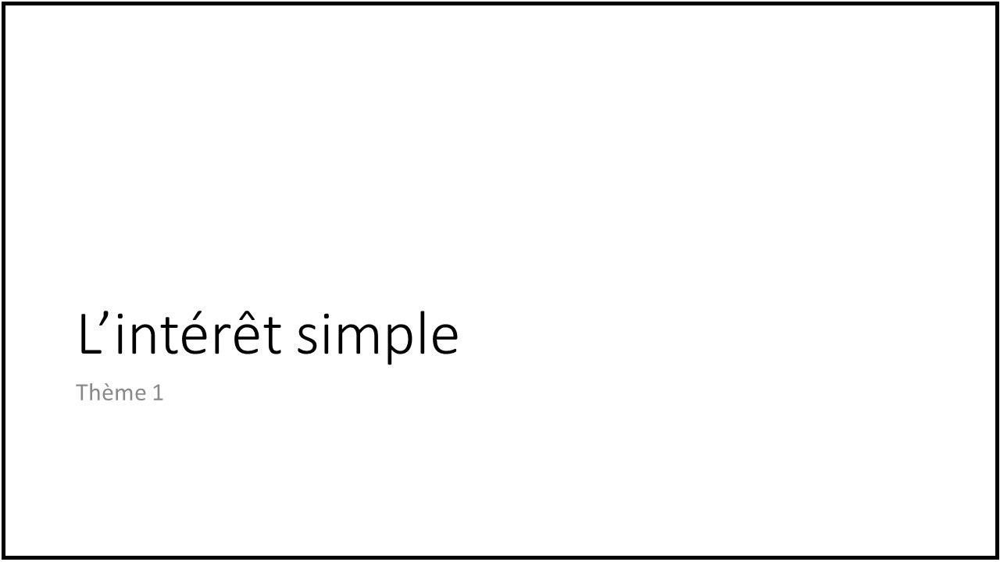
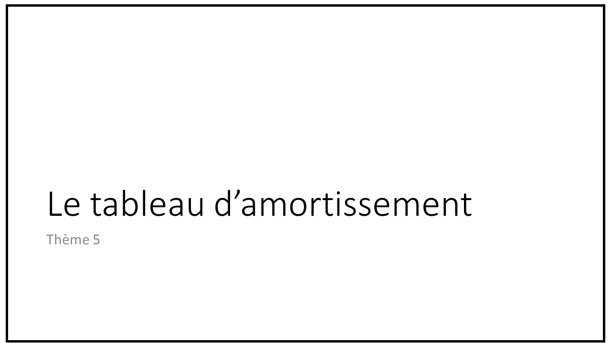

Pour ce permier semestre de l’année 2025-26, j’ai repris le cours de mathématique financière en licence 3 sciences de gestion (à l’IAE de Lille) à la fois pour les étudiants en banque finance et ceux de prépa ATS. Le dispositif mis en place combine à la fois pédagogie en ligne pour ce qui concerne le cours magistral et en face à face pour les travaux dirigés. A cette occasion, j’ai été amené à tourner une série de vidéo cours reprenant les principales notions abordées. Je profite de cette note de blog pour les partager. Elles sont stockées sur Youtube (abonnez vous!). Pour y accéder, vous pouvez cliquez sur les miniatures mises en regard des différents thèmes présentés ci-contre (vous pouvez également dérouler la playlist dédiée que vous trouverez ici).
Thème 1 : l’intérêt simple
Dans cette première vidéo, nous abordons rapidement la question de la nature des intérêts, les calculs de base impliquant un taux d’intérêt simple (valeur acquise, valeur actuelle et taux proportionnel) ainsi que les conventions affectant ce type de calculs.

Thème 2 : l’escompte
Dans cette seconde vidéo, nous traitons rapidement du calcul d’escompte en soulignant les conventions gouvernant à ce type de calcul et en pointant la différence avec la notion de valeur actuelle en présence d’intérêts simples.
La première fiche de travaux dirigés est consacrée à l’intérêt simple et à l’escompte. Vous pouvez la charger ici.
Thème 3 : l’intérêt composé
Dans cette troisième vidéo, nous décrivons les principes généraux du calcul à intérêt composé (valeur acquise, valeur actuelle, taux d’intérêts équivalents). Nous présentons également les principales conventions associées à ce type d’opération et en discutons certaines applications.
La première fiche de travaux dirigés est consacrée à l’intérêt composé. Vous pouvez la charger ici.
Thème 4 : les annuités
Dans cette quatrième vidéo, nous établissons les principes de calcul des valeur acquise et valeur actuelle de séries de flux d’investissement réguliers rapportant un intérêt composé. Nous approfondissons le sujet en examinant le cas particuliers des annuités constantes (le cas où ces flux réguliers sont toujours du même montant).

La première fiche de travaux dirigés est consacrée aux calcules d’annuité. Vous pouvez la charger ici.
Thème 5 : l’amortissement
Dans cette cinquième vidéo, nous passons en revue les différents calculs permettant d’établir des tableaux d’amortissement (des plans de remboursement) pour différente forme de crédit (zéro coupon, in fine, amortissement constant, annuités constantes). A cette occasion, nous abordons les instruments de comparaison de coûts des crédits que sont les TEG et TAEG.

La première fiche de travaux dirigés est consacrée aux tableaux d’amortissement d’emprunts. Vous pouvez la charger ici.